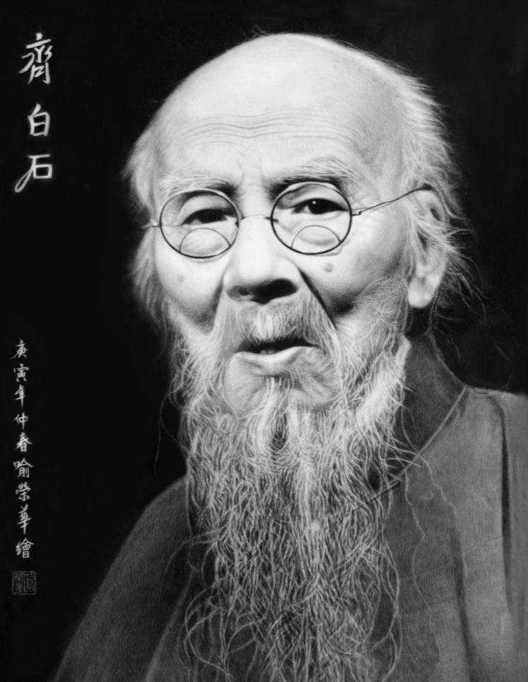
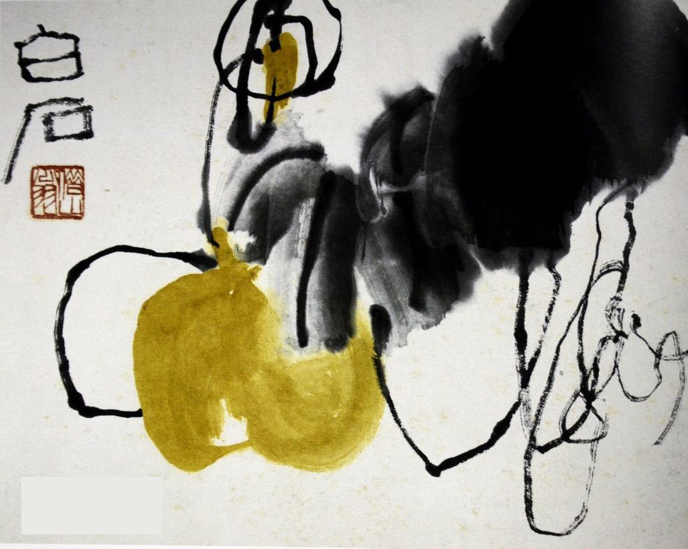
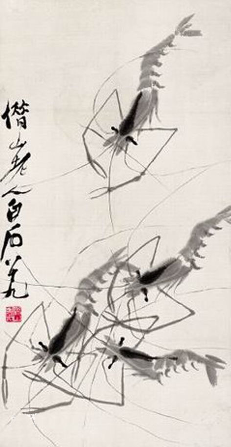

齐白石（1864年1月1日─1957年9月16日），祖籍安徽宿州砀山，生于湖南长沙府湘潭（今湖南湘潭）。
原名纯芝，字渭青，号兰亭。后改名璜，字濒生，号白石、白石山翁、老萍、饿叟、借山吟馆主者、寄萍堂上老人、三百石印富翁。
是近现代中国绘画大师，世界文化名人。早年曾为木工，后以卖画为生，五十七岁后定居北京。擅画花鸟、虫鱼、山水、人物，笔墨雄浑滋润，色彩浓艳明快，造型简练生动，意境淳厚朴实。所作鱼虾虫蟹，天趣横生。
齐白石书工篆隶，取法于秦汉碑版，行书饶古拙之趣，篆刻自成一家，善写诗文。曾任中央美术学院名誉教授、中国美术家协会主席等职。代表作有《蛙声十里出山泉》《墨虾》等。著有《白石诗草》《白石老人自述》等。
主要经历
- 1864年1月1日（农历癸亥年一八六三年冬月二十二日），齐白石生于湖南长沙府湘潭白石铺杏子坞星斗塘。名纯芝，字渭清，又字兰亭。27岁改名璜，字频生，别号白石山人，又号寄园。
- 1870年，从外祖父周雨若读书，常用习字本、账薄纸作画。
- 1878年，拜周之美为师学习雕花木工。做木工之余，以残本《芥子园》为师，习花鸟、人物画。
- 1888年，拜民间艺人萧芗陔为师学画肖像。
- 1889年，拜胡沁园、陈少蕃为师学诗文，得胡沁园帮助，脱离木工生活，专习绘画，为人作肖像养家。
- 1894年，与王仲言等七人结“龙山诗社”，被推选为社长。后与黎松庵等结“罗山诗社”，一起吟诗、作画、摹刻金石。
- 1899年，拜湘潭名士王闿运为师学习诗文。同年刊第一套印谱《寄园印存》，印学丁敬、黄易，规矩精密，可以乱真。
- 1900年，居住于莲花峰下梅公祠，自称“百梅书屋”，并在院内盖一小屋，名“借山吟馆”。致力于绘画、作诗。
- 1902年，应夏午诒邀请，赴西安教画。在西安3个月，又与夏午诒共赴北京，途中游历了华阴、弘农润。在西安结识樊樊山，他愿意将齐白石推荐给慈禧太后充当内廷供奉，夏午诒诒愿为他捐个县丞，都被他谢绝了。
- 1903年春夏之交，经天津、上海、汉口回家。

- 1904年，随王闿运赴江西，游庐山、南昌等地，刊印《白石草衣金石刻画》，王闿运为其作序。
- 1905年，赴广西，游桂林。与蔡锷、黄兴相识
- 1906年，春节后，过梧州经广州到钦州，郭葆生留其教画。饱览郭所藏徐渭、八大、金农诸名家真迹。用功作画，其间常为郭代笔。秋，回湘潭，以教画薪金购置旧屋并数十亩水田。
- 1907年，春夏之交，再赴钦州，游肇庆、端溪。冬，回湘潭。
- 1908年，春天即赴广州。是年，仅回湘潭小住几天，其余时间皆在广州度过。
- 1909年，在广州过春节，后去钦州。初夏赴上海，以卖画为生。夏秋之间，游苏州。往南京拜访李梅庵，为其治印三方。10月返回湘潭，至此结束“五出五归”的远游生活。其后在家乡葺“寄萍堂”，开始8年的山居生活，潜心吟诗作画。对八大山人、石涛的花鸟画多所取法，画笔更见简练，但草虫写生，多工致，间或以写意出之。书法学金农，得其神髓。
- 1917年，为避土匪之扰赴北京。正赶上“张勋复辟”，匆匆去天津避难。局势稍定，复归北京，在琉璃厂南纸铺挂润格卖画。期间和老朋友樊樊山、夏午诒、郭葆生等往来甚密。并结识陈师曾、姚茫父、陈半丁等。其中与陈师曾订交，对晚年齐白石有极大影响。是年冬，离京返湘，乡居一年。
- 1919年，与胡宝珠结婚，从此定居北京。
- 1923年，陈师曾在南京病逝，数次题诗痛悼好友。1925年，春，大病，人事不知七昼夜。卧病榻月余，停止作画、刻印。
- 1926年，母亲、父亲相继去世。两度停止作画、刻印。
- 1927年，应林风眠邀请，任教于北京艺术专科学校。
- 1928年，印行《白石诗草》《借山吟馆诗草》（手写本影印）
- 1933年，印行《白石诗草》（八卷铅印本）
- 1936年，游四川。在川结识黄宾虹。
- 1937年，听信长沙舒贻上算命说，用瞒天过海法，自署77岁。是年7月，北平沦陷，心情悲愤，轻易不见客。
- 1940年，农历正月，妻陈君春去世，撰《祭陈夫人》文。为反抗日寇及汉奸的骚扰索画，贴出“画不卖与官家”的告白，谢绝见客。
- 1944年1月，继室胡宝珠病故。6月，拒绝北平艺专配给用煤。
- 1946年，抗战结束，复又在琉璃厂挂润格，恢复卖画刻印。10月，去南京、上海办画展，200多张画全部卖出，带回一捆捆“法币”，如同废纸，竟买不到10袋面粉。
- 1949年1月，北平解放。参加周恩来总理招待宴会。为毛泽东刻石印两方。担任中央美术学院名誉教授。
- 1950年，被聘为中央文史馆馆员。4月间，曾和毛泽东共进晚餐，朱德作陪。10月，把82岁时所作的《鹰》和篆书对联“海为龙世界，云是鹤家乡”赠送毛泽东。参加北京市“抗美援朝书画义卖展览会”。冬，为《人民日报》画《和平鸽》1951年2月，画作10余幅参加沈阳市“抗美援朝书画义卖展览会”。
- 1952年，用三天时间，为北京亚太地区和平大会创作丈二巨幅《白花与和平鸽》。同年，多次创作题为《和平胜利》《和平万岁》的作品。
- 1953年1月7日，北京文化艺术界200余人参加“齐白石90岁生日庆祝会”，文化部授予齐白石杰出的人民艺术家称号。周恩来出席了晚间的庆祝宴会。担任北京中国画研究会主席10月，当选为中国美术家协会第一任理事会主席。
- 1954年4月28日，中国美术家协会在故宫博物院举办“齐白石绘画展览会”8月，当选为全国人大代表。9月15日，出席首届全国人代会。
- 1955年6月，与陈半丁、何香凝等14位画家为世界和平大会合作巨幅《和平颂》。
- 1956年4月27日，世界和平理事会宣布授予齐白石国际和平奖金，9月1日，在北京隆重举行授奖仪式。周恩来总理亲自到场祝贺。
- 1957年5月15日，担任北京中国画院名誉院长。5--6月间，作最后一幅作品《牡丹》。9月16日，在北京医院逝世。9月22日上午在嘉兴寺举行公祭，周恩来总理等中央领导参加了公祭。
- 1963年，齐白石被选为世界十大文化名人之一。
齐白石在北京定居后，内心却是“故里山花此时开也”的思想轨迹。齐白石不可能将家乡草木赶过黄河带到北京，但家乡草木却作为一种自然信息随齐白石来到北京，并化作艺术信息传达出来，以实现齐白石心理的平衡。齐白石刻了许多寄托着怀乡之情的闲文印，如“吾家衡岳山下”、“客中月光亦照家山”，是齐白石自抒胸臆的第一主题。齐白石写了许多的怀乡诗，如：“登高时近倍思乡，饮酒簪花更断肠，寄语南飞天上雁，心随君侣到星塘。”又如“饱谱尘世味，夜夜梦星塘”、“此时正是梅开际，老屋檐前花有无”，这些诗句是齐白石“夜不安眠”、“枕上愁余”时所些的肺腑之语。变法和着变意，变意和着变法，乡心伴着童心，童心也总念乡心。

齐白石的作品《我最知鱼》，画着小鱼围逐钓饵，是齐白石少时作惯之事，故能“知鱼”；齐白石77岁时画《墨猪出栏》，是因为齐白石有一颗“牧汝追思七十年”的心；齐白石画那些黑蜻蜓、红甲虫，是因为齐白石还记得乡里人叫黑蜻蜓作“黑婆子”，叫小甲虫作“红娘子”，这正是农民眼中的草虫，是农民的审美情趣；齐白石画鲇鱼题“年年有余”，画石榴象征多子，画桃子象征多寿，这也是民间艺术喻意象征的特色。
齐白石笔下的钟馗、寿星、仙佛一类作品，也是农民们聊天时嘴边上的对象。这类作品，是齐白石的恋乡情结和童真情趣的自然流露，是“以农器谱传吾子孙”的愿望，是一种有异于“诗书传家远”的农民意识的自觉的表白。当齐白石画《白菜辣椒》时，不仅有感于红与黑的对比，同时也为“牡丹为花之王，荔枝为果之先，独不论白菜为菜之王”，而愤愤不平；齐白石在有关画白菜的题句中，所表示的“不是独夸根有味，须知此老是农夫”，“不独老萍知此味，先人三代咬其根”，正是《农耕图》中的那位老农的自白。也是齐白石对本色、本质毫不掩饰的自我肯定。
齐白石从来没有入仕愿望，懒于应酬，不管闲事，与世无争，始终以一颗纯真的心，沉浸在艺术的体验之中，沉浸艺术故乡里。齐白石的乡心、童心和农人之心的流露和艺术中的乡土气息，根源于齐白石的劳动生活。齐白石也曾在艺术上走投无路，那是虚假地因袭“八大山人”的情感所必然遭到的碰壁命运，实质上那是齐白石的心态与过去的文人之间不相谐和的结局。当齐白石认定自己是农夫时候，往年储备的自然信息便源源不绝地奔赴腕底、舌端、刀锋，化作了新的艺术信息，抛弃了古人表达情感的艺术手段，创造出表达齐白石特有情怀的艺术语言和艺术形式。齐白石艺术中的乡心、童心和农民之心的真诚流露，是齐白石的真心和本质的艺术表现。齐白石以本质、自我、变法、变意以及本质的艺术表现，才是齐白石“衰年变法”的深刻底蕴。
齐白石有关造型的著名画语——“作画妙在似与不似之间，太似为媚俗，不似为欺”，既是齐白石的造型观，也是齐白石在整个艺术格调上，欲求沟通世俗和文人的审美意趣。既不流于媚俗，也不狂怪欺世的中间选择。“似与不似之间”的造型妙趣，和齐白石的“平正见齐”的观点一样，是这位既能极工，又能极简，分别地在两个极端上有所创造，而最终又不肯拘泥于任何一个极端的艺术家所选择的造型尺度和审美的中界点。晚年的齐白石日趋简化的画风，是日益强化了“不似之似”的造型，也日益强化了“神”的主导地位，臻于“笔愈简而神愈全”的境界。齐白石生命最后一年的“糊涂”笔致，也是一种艺术中难得的糊涂，是突破了楷书般的笔法，进入无法而法的高妙表现，是艺术家主宰艺术形象的最高境界。